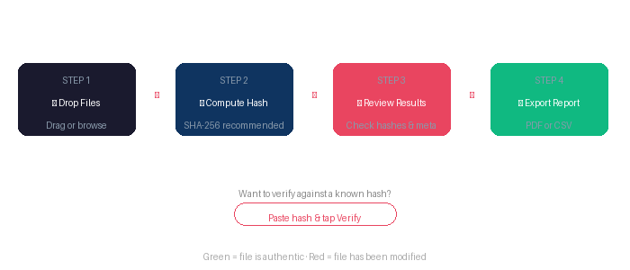

⚖️ Evidence Integrity Validator
Professional Forensic File Integrity Checking Tool
User Manual — Version 1.0
For Windows · Works offline · No installation required
Table of Contents
- Overview
- Installation
- Quick Start Guide
- Features Explained
- File Hashing
- Metadata Extraction
- Hash Verification
- Report Generation
- Troubleshooting
- License & Support
1. Overview
The Evidence Integrity Validator is a forensic tool designed for digital investigators, law enforcement professionals, and cybersecurity experts. It allows you to:
- Compute cryptographic hashes of files (MD5, SHA1, SHA256, SHA512, BLAKE2b)
- Extract metadata from images (including GPS coordinates), PDFs, and Office documents
- Verify files against known hash values
- Generate court-ready PDF reports with chain of custody
- Export results to CSV for spreadsheets
Key Benefit: Everything works offline — no internet connection required. Your evidence never leaves your machine.
2. Installation
System Requirements
| Operating System | Windows 10 or Windows 11 |
| RAM | 512 MB minimum (2 GB recommended) |
| Disk Space | 150 MB for the application |
| Internet | Not required for operation |
Installation Steps
Step 1: Download the EvidenceValidator.exe file from the link provided by your distributor.
Step 2: Double-click the .exe file to run it.
Step 3: If Windows SmartScreen shows a warning, click "More info" then "Run anyway". This is normal for new software — the program is safe.
Step 4: Your default web browser will open showing the main interface at http://localhost:8081.
Note: The application runs as a local web server on your machine only. No data is sent anywhere. Close the terminal window to stop the program.
3. Quick Start Guide

Compute Hash -> Review Results -> Export Report" style="width:100%;max-width:700px;">
Step 1 — Drop Files: Drag and drop any files into the dashed box on the left panel, or click "browse files" to select them.
Step 2 — Compute Hashes: Select your hash algorithm (SHA256 is recommended) and click the "Compute Hashes" button.
Step 3 — Review Results: Each file shows its hash value, file size, and last modified date. Green badges indicate verified matches.
Step 4 — Generate Report: Click "Generate Report (PDF)" to create a court-ready PDF. The report downloads automatically.
Pro Tip: Fill in the Case Information fields first (Case Reference, Examiner Name, Agency) — this information will appear on your PDF report.
4. Features Explained
Main Screen Layout
| Area | Description |
|---|
| 📋 Case Information | Enter case reference, your name, and agency — printed on reports |
| 📁 Drop Files | Drag & drop area or browse to select files for analysis |
| 📂 Loaded Files | Shows all files added to the current session |
| ⚡ Actions | Compute hashes, verify, generate reports, export CSV |
| 📊 Results | Displays computed hashes, file info, and verification status |
| 🔎 Metadata | Opens when you click "Metadata" on any result |
5. File Hashing
Hashing creates a unique digital fingerprint of a file. Even a single character change in the file produces a completely different hash.
Supported Algorithms
| Algorithm | Hash Length | Use Case |
|---|
| MD5 | 32 characters | Legacy compatibility (not recommended for security) |
| SHA-1 | 40 characters | Legacy systems |
| SHA-256 | 64 characters | Recommended — Industry standard |
| SHA-384 | 96 characters | High-security applications |
| SHA-512 | 128 characters | Maximum security |
| BLAKE2b | 128 characters | Fast, modern alternative |
How to Hash Files
- Select your desired algorithm from the dropdown menu (SHA-256 is the default)
- Ensure your files are loaded in the file list
- Click "Compute Hashes"
- Results appear in the right panel — each file shows its unique hash
- Click on any hash value to select it for copying
Why SHA-256? SHA-256 is the industry standard for digital forensics. It's used by law enforcement agencies worldwide and is recognized in court proceedings.
Files contain hidden information called metadata. The Evidence Validator can extract this data to help your investigation.
What Can Be Extracted
📷 Images (JPEG, PNG, TIFF)
- Camera make and model
- Date and time taken
- GPS coordinates (latitude/longitude)
- Image dimensions and resolution
- Software used to edit the image
- Flash settings, focal length, ISO
📄 PDF Documents
- Author name
- Creation and modification dates
- Software used to create the PDF
- Number of pages
- Document title and subject
📝 Office Documents (DOCX, XLSX, PPTX)
- Author and last modified by
- Creation and modification dates
- Revision number
- Company name
How to View Metadata
- Hash your files first (see Section 5)
- In the results panel, click "Metadata" on any file
- The metadata panel opens below showing all extracted information
- For images with GPS data, a Google Maps link is automatically generated
7. Hash Verification
Use this feature to verify that a file matches a known hash value — for example, checking a downloaded file against the hash published by the original source.
How to Verify a File
Step 1: Load and hash your file (see Section 5).
Step 2: Paste the expected hash value into the verification box below the "Compute Hashes" button.
Step 3: Click "Verify".
The result will show one of two outcomes:
- ✅ MATCH — The file is authentic and has not been modified
- ❌ MISMATCH — The file has been altered or corrupted since the original hash was created
Important: The verification tool auto-detects the hash algorithm based on the length of the hash you paste (e.g., 64 characters = SHA-256).
8. Report Generation
The Evidence Validator produces professional forensic reports suitable for submission as evidence in legal proceedings.
What's Included in the PDF Report
- Case Information: Case reference, examiner name, agency, date
- Chain of Custody: Timestamped record of when files were examined
- File Details: Name, path, size, last modified date for each file
- Hash Values: Full hash for each file with algorithm specified
- Verification Results: Match/mismatch status if verification was performed
- Extracted Metadata: All discovered metadata for each file
- Certification Section: Signed statement from the examiner
How to Generate a Report
- Fill in the Case Information fields (Case Reference, Examiner, Agency)
- Load and hash your files
- Click "Generate Report (PDF)"
- The PDF downloads automatically
Exporting to CSV
For spreadsheet analysis, click "Export CSV" after hashing. This saves the file hashes to a CSV file that can be opened in Excel.
9. Troubleshooting
Application won't start
| Problem | Solution |
|---|
| Windows SmartScreen warning | Click "More info" → "Run anyway" |
| Nothing happens when double-clicking | Try running as Administrator (right-click → Run as administrator) |
| Port 8081 already in use | Close other applications that might use this port |
Browser doesn't open
Manually open your browser and go to: http://localhost:8081
Large files are slow
Very large files (GB+) take longer to hash. This is normal — the file must be read entirely. Allow time for files over 1GB.
Can't copy hash values
Click directly on the hash text to select it, then press Ctrl+C (Windows) to copy.
Trial limit reached
The trial version allows up to 3 files. To process unlimited files, purchase a license from your distributor.
10. License & Support
Trial Mode
The trial version allows you to process up to 3 files per session. This lets you fully evaluate the tool before purchasing.
Licensed Version
After purchasing, you'll receive a license key that unlocks:
- Unlimited file processing
- Clean, unwatermarked PDF reports
- Free updates for the lifetime of version 1.x
Contact & Support
To purchase a license or get support:
Email: ibbiy@icloud.com
Best Practices
- Always hash files immediately after acquisition to establish a baseline
- Store hash values separately from the files themselves
- Use SHA-256 as your default algorithm unless a specific standard requires otherwise
- Include chain of custody information in every report
- Keep the PDF reports as part of your case evidence archive
Evidence Integrity Validator v1.0 — User Manual
© 2026. All rights reserved.